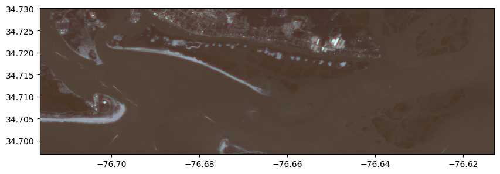
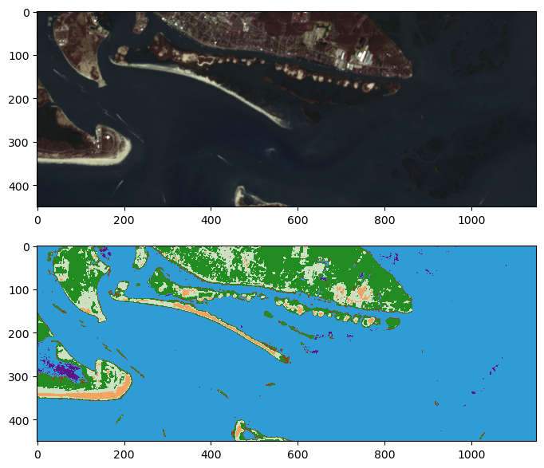
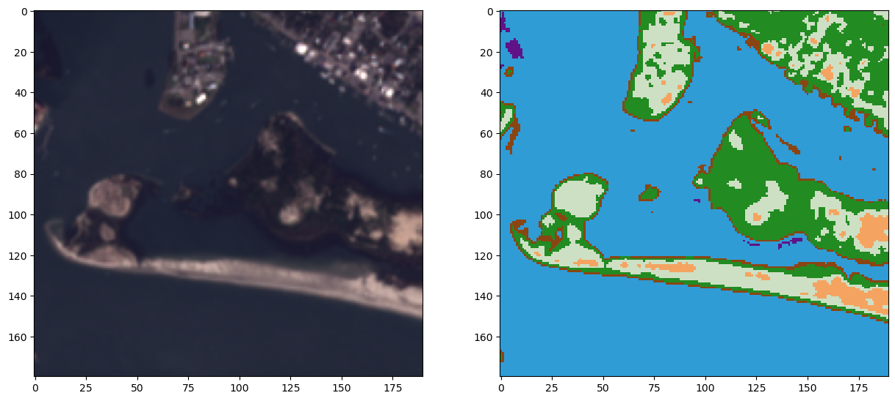
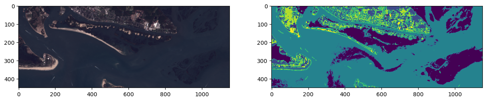

Code
import rasterio
from rasterio.mask import mask
import geopandas as gpd
import numpy as np
from shapely.geometry import mappingIn this chapter we will classify data from the Sentinel-2 satellite using a supervised classification approach which incorporates the training data represented as a vector (shapefile). Specifically, we will be using Naive Bayes. Naive Bayes predicts the probabilities that a data point belongs to a particular class and the class with the highest probability is considered as the most likely class. The way they get these probabilities is by using Bayes’ Theorem, which describes the probability of a feature, based on prior knowledge of conditions that might be related to that feature. Naive Bayes is quite fast when compared to some other machine learning approaches (e.g., SVM can be quite computationally intensive). This isn’t to say that it is the best per se; rather it is a great first step into the world of machine learning for classification and regression.
Our first step is to import the relevant packages. Of note are a couple new ones, namely rasterio and shapely. These are excellent libraries that simplify working with rasters and vectors (respectively). They wrap around GDAL so you don’t have to do it the hard way. They also provide some very useful helper functions, like mask and mapping, which we explicitly import below.
import rasterio
from rasterio.mask import mask
import geopandas as gpd
import numpy as np
from shapely.geometry import mappingNow we need to collect all the Sentinal-2 bands because they come as individual images one per band. Ultimately, we’re going to rewrite them into a multi-band (8 bands) geotiff for later use in regression.
import os # we need os to do some basic file operations
data_dir = "../data/lulc_classification_example/"
sentinal_fp = os.path.join(data_dir, "sentinel-2/")
# If this isn't working it's probably because you have the file saved somewhere else than where sentinal_fp points.
# Examine the absolute path to investigate.
a = os.path.abspath(sentinal_fp)
# find every file in the sentinal_fp directory
sentinal_band_paths = [os.path.join(sentinal_fp, f) for f in os.listdir(sentinal_fp) if os.path.isfile(os.path.join(sentinal_fp, f))]
sentinal_band_paths.sort()
sentinal_band_paths['../data/lulc_classification_example/sentinel-2/2018-10-13, Sentinel-2B L1C, B01.tiff',
'../data/lulc_classification_example/sentinel-2/2018-10-13, Sentinel-2B L1C, B02.tiff',
'../data/lulc_classification_example/sentinel-2/2018-10-13, Sentinel-2B L1C, B03.tiff',
'../data/lulc_classification_example/sentinel-2/2018-10-13, Sentinel-2B L1C, B04.tiff',
'../data/lulc_classification_example/sentinel-2/2018-10-13, Sentinel-2B L1C, B05.tiff',
'../data/lulc_classification_example/sentinel-2/2018-10-13, Sentinel-2B L1C, B06.tiff',
'../data/lulc_classification_example/sentinel-2/2018-10-13, Sentinel-2B L1C, B07.tiff',
'../data/lulc_classification_example/sentinel-2/2018-10-13, Sentinel-2B L1C, B08.tiff']Below we will create a rasterio dataset object containing all bands in order to use the mask() function and extract pixel values using geospatial polygons.
We’ll do this by creating a new raster dataset and saving it for future uses.
# create a products directory within the data dir which won't be uploaded to Github
workspace_dir = '../../textbook_workspace'
img_dir = os.path.join(workspace_dir, 'generated_lulc')
# check to see if the dir it exists, if not, create it
if not os.path.exists(img_dir):
os.makedirs(img_dir)
# filepath for image we're writing out
img_fp = os.path.join(img_dir, 'sentinel_bands.tif')
# Read metadata of first file and assume all other bands are the same
with rasterio.open(sentinal_band_paths[0]) as src0:
meta = src0.meta
# Update metadata to reflect the number of layers
meta.update(count = len(sentinal_band_paths))
# Read each layer and write it to stack
with rasterio.open(img_fp, 'w', **meta) as dst:
for id, layer in enumerate(sentinal_band_paths, start=1):
with rasterio.open(layer) as src1:
dst.write_band(id, src1.read(1))Okay we’ve successfully written it out now let’s open it back up and make sure it meets our expectations:
full_dataset = rasterio.open(img_fp)
img_rows, img_cols = full_dataset.shape
img_bands = full_dataset.count
print(full_dataset.shape) # dimensions
print(full_dataset.count) # bands(2201, 2629)
8Let’s clip the image and take a look at it. In the starter code below, we use the .read() method to read three different bands into a single image that we will plot. We also use numpy slice notation to clip out a smaller part of the array.
HOWEVER, the image won’t look right on its own. You can kind of tell there is color, but it doesn’t look like it should. That’s because we’re reading in the wrong bands (our eyes are expecting Red, Green and Blue).
As a class race, try out different combinations of bands. When you think you’ve got it, raise your hand. When someone gets it, or after 2 minutes, whoever has the best image wins! Hint: if you want to nail this, just look at the sentinel documentation https://gprivate.com/62co2.
import matplotlib.pyplot as plt
from rasterio.plot import show
band_1 = 1
band_2 = 2
band_3 = 3
clipped_img = full_dataset.read([band_1, band_2, band_3])[:, 150:600, 250:1400]
print(clipped_img.shape)
fig, ax = plt.subplots(figsize=(10,7))
show(clipped_img[:, :, :], ax=ax, transform=full_dataset.transform) # add the transform arg to get it in lat long coords(3, 450, 1150)<AxesSubplot: >
Okay looks good! Our raster dataset is ready!
Our training data, the shapefile we’ve worked with, contains one main field we care about: + a Classname field (String datatype)
Combined with the innate location information of polygons in a Shapefile, we have all that we need to use for pairing labels with the information in our raster.
However, in order to pair up our vector data with our raster pixels, we will need a way of co-aligning the datasets in space.
We’ll do this using the rasterio mask function which takes in a dataset and a polygon and then outputs a numpy array with the pixels in the polygon.
Let’s run through an example:
full_dataset.crsCRS.from_epsg(4326)Open up our shapefile and check its crs
shapefile = gpd.read_file(os.path.join(data_dir, 'rcr', 'rcr_landcover.shp'))
shapefile.crs<Derived Projected CRS: EPSG:32618>
Name: WGS 84 / UTM zone 18N
Axis Info [cartesian]:
- E[east]: Easting (metre)
- N[north]: Northing (metre)
Area of Use:
- name: Between 78°W and 72°W, northern hemisphere between equator and 84°N, onshore and offshore. Bahamas. Canada - Nunavut; Ontario; Quebec. Colombia. Cuba. Ecuador. Greenland. Haiti. Jamaica. Panama. Turks and Caicos Islands. United States (USA). Venezuela.
- bounds: (-78.0, 0.0, -72.0, 84.0)
Coordinate Operation:
- name: UTM zone 18N
- method: Transverse Mercator
Datum: World Geodetic System 1984 ensemble
- Ellipsoid: WGS 84
- Prime Meridian: GreenwichRemember the projections don’t match! Let’s use some geopandas magic to reproject all our shapefiles to lat, long.
shapefile = shapefile.to_crs({'init': 'epsg:4326'})c:\Users\jajohns\AppData\Local\mambaforge\envs\8222env1\lib\site-packages\pyproj\crs\crs.py:130: FutureWarning: '+init=<authority>:<code>' syntax is deprecated. '<authority>:<code>' is the preferred initialization method. When making the change, be mindful of axis order changes: https://pyproj4.github.io/pyproj/stable/gotchas.html#axis-order-changes-in-proj-6
in_crs_string = _prepare_from_proj_string(in_crs_string)shapefile.crs<Geographic 2D CRS: +init=epsg:4326 +type=crs>
Name: WGS 84
Axis Info [ellipsoidal]:
- lon[east]: Longitude (degree)
- lat[north]: Latitude (degree)
Area of Use:
- name: World.
- bounds: (-180.0, -90.0, 180.0, 90.0)
Datum: World Geodetic System 1984 ensemble
- Ellipsoid: WGS 84
- Prime Meridian: Greenwichlen(shapefile)23Now we want to extract the geometry of each feature in the shapefile in GeoJSON format:
# this generates a list of shapely geometries
geoms = shapefile.geometry.values
# let's grab a single shapely geometry to check
geometry = geoms[0]
print(type(geometry))
print(geometry)
# transform to GeoJSON format
from shapely.geometry import mapping
feature = [mapping(geometry)] # can also do this using polygon.__geo_interface__
print(type(feature))
print(feature)<class 'shapely.geometry.polygon.Polygon'>
POLYGON ((-76.67593927883173 34.69487548849214, -76.67573882771855 34.694513199139024, -76.6766693455509 34.69360077384821, -76.67676946161477 34.69421769352402, -76.67593927883173 34.69487548849214))
<class 'list'>
[{'type': 'Polygon', 'coordinates': (((-76.67593927883173, 34.69487548849214), (-76.67573882771855, 34.694513199139024), (-76.6766693455509, 34.69360077384821), (-76.67676946161477, 34.69421769352402), (-76.67593927883173, 34.69487548849214)),)}]Now let’s extract the raster values values within the polygon using the rasterio mask() function
out_image, out_transform = mask(full_dataset, feature, crop=True)
out_image.shape(8, 18, 13)Okay those looks like the right dimensions for our training data. 8 bands and 6x8 pixels seems reasonable given our earlier explorations.
We’ll be doing a lot of memory intensive work so let’s clean up and close this dataset.
full_dataset.close()scikit-learnNow let’s do it for all features in the shapefile and create an array X that has all the pixels and an array y that has all the training labels.
X = np.array([], dtype=np.int8).reshape(0,8) # pixels for training
y = np.array([], dtype=np.string_) # labels for training
# extract the raster values within the polygon
with rasterio.open(img_fp) as src:
band_count = src.count
for index, geom in enumerate(geoms):
feature = [mapping(geom)]
# the mask function returns an array of the raster pixels within this feature
out_image, out_transform = mask(src, feature, crop=True)
# eliminate all the pixels with 0 values for all 8 bands - AKA not actually part of the shapefile
out_image_trimmed = out_image[:,~np.all(out_image == 0, axis=0)]
# eliminate all the pixels with 255 values for all 8 bands - AKA not actually part of the shapefile
out_image_trimmed = out_image_trimmed[:,~np.all(out_image_trimmed == 255, axis=0)]
# reshape the array to [pixel count, bands]
out_image_reshaped = out_image_trimmed.reshape(-1, band_count)
# append the labels to the y array
y = np.append(y,[shapefile["Classname"][index]] * out_image_reshaped.shape[0])
# stack the pizels onto the pixel array
X = np.vstack((X, out_image_reshaped)) Now that we have the image we want to classify (our X feature inputs), and the land cover labels (our y labeled data), let’s check to make sure they match in size so we can feed them to Naive Bayes:
# What are our classification labels?
labels = np.unique(shapefile["Classname"])
print('The training data include {n} classes: {classes}\n'.format(n=labels.size,
classes=labels))
# We will need a "X" matrix containing our features, and a "y" array containing our labels
print('Our X matrix is sized: {sz}'.format(sz=X.shape))
print('Our y array is sized: {sz}'.format(sz=y.shape))The training data include 6 classes: ['Emergent Wetland' 'Forested Wetland' 'Herbaceous' 'Sand'
'Subtidal Haline' 'WetSand']
Our X matrix is sized: (598, 8)
Our y array is sized: (598,)It all looks good! Let’s explore the spectral signatures of each class now to make sure they’re actually separable since all we’re going by in this classification is pixel values.
fig, ax = plt.subplots(1,3, figsize=[20,8])
# numbers 1-8
band_count = np.arange(1,9)
classes = np.unique(y)
for class_type in classes:
band_intensity = np.mean(X[y==class_type, :], axis=0)
ax[0].plot(band_count, band_intensity, label=class_type)
ax[1].plot(band_count, band_intensity, label=class_type)
ax[2].plot(band_count, band_intensity, label=class_type)
# plot them as lines
# Add some axis labels
ax[0].set_xlabel('Band #')
ax[0].set_ylabel('Reflectance Value')
ax[1].set_ylabel('Reflectance Value')
ax[1].set_xlabel('Band #')
ax[2].set_ylabel('Reflectance Value')
ax[2].set_xlabel('Band #')
#ax[0].set_ylim(32,38)
ax[1].set_ylim(32,38)
ax[2].set_ylim(70,140)
#ax.set
ax[1].legend(loc="upper right")
# Add a title
ax[0].set_title('Band Intensities Full Overview')
ax[1].set_title('Band Intensities Lower Ref Subset')
ax[2].set_title('Band Intensities Higher Ref Subset')Text(0.5, 1.0, 'Band Intensities Higher Ref Subset')
They look okay but emergent wetland and subtital haline look quite similar! They’re going to be difficult to differentiate.
Let’s make a quick helper function, this one will convert the class labels into indicies and then assign a dictionary relating the class indices and their names.
def str_class_to_int(class_array):
class_array[class_array == 'Subtidal Haline'] = 0
class_array[class_array == 'WetSand'] = 1
class_array[class_array == 'Emergent Wetland'] = 2
class_array[class_array == 'Sand'] = 3
class_array[class_array == 'Herbaceous'] = 4
class_array[class_array == 'Forested Wetland'] = 5
return(class_array.astype(int))Now that we have our X matrix of feature inputs (the spectral bands) and our y array (the labels), we can train our model.
Visit this web page to find the usage of GaussianNaiveBayes Classifier from scikit-learn.
from sklearn.naive_bayes import GaussianNB
gnb = GaussianNB()
gnb.fit(X, y)GaussianNB()In a Jupyter environment, please rerun this cell to show the HTML representation or trust the notebook.
GaussianNB()
It is that simple to train a classifier in scikit-learn! The hard part is often validation and interpretation.
With our Naive Bayes classifier fit, we can now proceed by trying to classify the entire image:
We’re only going to open the subset of the image we viewed above because otherwise it is computationally too intensive for most users.
from rasterio.plot import show
from rasterio.plot import show_hist
from rasterio.windows import Window
from rasterio.plot import reshape_as_raster, reshape_as_imagewith rasterio.open(img_fp) as src:
# may need to reduce this image size if your kernel crashes, takes a lot of memory
img = src.read()[:, 150:600, 250:1400]
# Take our full image and reshape into long 2d array (nrow * ncol, nband) for classification
print(img.shape)
reshaped_img = reshape_as_image(img)
print(reshaped_img.shape)(8, 450, 1150)
(450, 1150, 8)Now we can predict for each pixel in our image:
class_prediction = gnb.predict(reshaped_img.reshape(-1, 8))
# Reshape our classification map back into a 2D matrix so we can visualize it
class_prediction = class_prediction.reshape(reshaped_img[:, :, 0].shape)Because our shapefile came with the labels as strings we want to convert them to a numpy array with ints using the helper function we made earlier.
class_prediction = str_class_to_int(class_prediction)First we’ll make a colormap so we can visualize the classes, which are just encoded as integers, in more logical colors. Don’t worry too much if this code is confusing! It can be a little clunky to specify colormaps for matplotlib.
def color_stretch(image, index):
colors = image[:, :, index].astype(np.float64)
for b in range(colors.shape[2]):
colors[:, :, b] = rasterio.plot.adjust_band(colors[:, :, b])
return colors
# find the highest pixel value in the prediction image
n = int(np.max(class_prediction))
# next setup a colormap for our map
colors = dict((
(0, (48, 156, 214, 255)), # Blue - Water
(1, (139,69,19, 255)), # Brown - WetSand
(2, (96, 19, 134, 255)), # Purple - Emergent Wetland
(3, (244, 164, 96, 255)), # Tan - Sand
(4, (206, 224, 196, 255)), # Lime - Herbaceous
(5, (34, 139, 34, 255)), # Forest Green - Forest
))
# Put 0 - 255 as float 0 - 1
for k in colors:
v = colors[k]
_v = [_v / 255.0 for _v in v]
colors[k] = _v
index_colors = [colors[key] if key in colors else
(255, 255, 255, 0) for key in range(0, n+1)]
cmap = plt.matplotlib.colors.ListedColormap(index_colors, 'Classification', n+1)Now show the classified map next to the RGB image!
fig, axs = plt.subplots(2,1,figsize=(10,7))
img_stretched = color_stretch(reshaped_img, [4, 3, 2])
axs[0].imshow(img_stretched)
axs[1].imshow(class_prediction, cmap=cmap, interpolation='none')
fig.show()C:\Users\jajohns\AppData\Local\Temp\ipykernel_15156\1384158104.py:8: UserWarning: Matplotlib is currently using module://matplotlib_inline.backend_inline, which is a non-GUI backend, so cannot show the figure.
fig.show()
Let’s generate a map of Normalized Difference Water Index (NDWI) and NDVI just to compare with out output map.
NDWI is similar to NDVI but for identifying water.
with rasterio.open(img_fp) as src:
green_band = src.read(3)
red_band = src.read(4)
nir_band = src.read(8)
ndwi = (green_band.astype(float) - nir_band.astype(float)) / (green_band.astype(float) + nir_band.astype(float))
ndvi = (nir_band.astype(float) - red_band.astype(float)) / (red_band.astype(float) + nir_band.astype(float))Subset them to our area of interest:
ndwi = ndwi[150:600, 250:1400]
ndvi = ndvi[150:600, 250:1400]Display all four maps:
fig, axs = plt.subplots(2,2,figsize=(15,7))
img_stretched = color_stretch(reshaped_img, [3, 2, 1])
axs[0,0].imshow(img_stretched)
axs[0,1].imshow(class_prediction, cmap=cmap, interpolation='none')
nwdi_plot = axs[1,0].imshow(ndwi, cmap="RdYlGn")
axs[1,0].set_title("NDWI")
fig.colorbar(nwdi_plot, ax=axs[1,0])
ndvi_plot = axs[1,1].imshow(ndvi, cmap="RdYlGn")
axs[1,1].set_title("NDVI")
fig.colorbar(ndvi_plot, ax=axs[1,1])
plt.show()
Looks pretty good! Areas that are high on the NDWI ratio are generally classified as water and areas high on NDVI are forest and herbaceous. It does seem like the wetland areas (e.g. the bottom right island complex) aren’t being picked up so it might be worth experimenting with other algorithms!
Let’s take a closer look at the Duke Marine Lab and the tip of the Rachel Carson Reserve.
fig, axs = plt.subplots(1,2,figsize=(15,15))
img_stretched = color_stretch(reshaped_img, [3, 2, 1])
axs[0].imshow(img_stretched[0:180, 160:350])
axs[1].imshow(class_prediction[0:180, 160:350], cmap=cmap, interpolation='none')
fig.show()C:\Users\jajohns\AppData\Local\Temp\ipykernel_15156\1670099218.py:8: UserWarning: Matplotlib is currently using module://matplotlib_inline.backend_inline, which is a non-GUI backend, so cannot show the figure.
fig.show()
This actually doesn’t look half bad! Land cover mapping is a complex problem and one where there are many approaches and tools for improving a map.
Let’s also try a unsupervised classification algorithm, k-means clustering, in the scikit-learn library (documentation)
K-means (wikipedia page) aims to partition n observations into k clusters in which each observation belongs to the cluster with the nearest mean, serving as a prototype of the cluster.
from sklearn.cluster import KMeans
bands, rows, cols = img.shape
k = 10 # num of clusters
kmeans_predictions = KMeans(n_clusters=k, random_state=0).fit(reshaped_img.reshape(-1, 8))
kmeans_predictions_2d = kmeans_predictions.labels_.reshape(rows, cols)
# Now show the classmap next to the image
fig, axs = plt.subplots(1,2,figsize=(15,8))
img_stretched = color_stretch(reshaped_img, [3, 2, 1])
axs[0].imshow(img_stretched)
axs[1].imshow(kmeans_predictions_2d)<matplotlib.image.AxesImage at 0x19a12736320>
Wow this looks like it was better able to distinguish some areas like the wetland and submerged sand than our supervised classification approach! But supervised usually does better with some tuning, luckily there are lots of ways to think about improving our supervised method.
Adapted from the wonderful tutorial series by Patrick Gray: https://github.com/patrickcgray